Raquel, Psicóloga
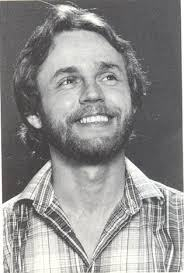
Memoria Multialmacén
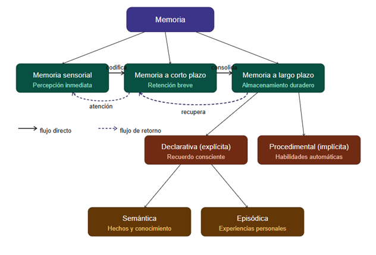
HM
El paciente más estudiado de la historia de la ciencia.
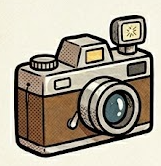
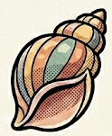
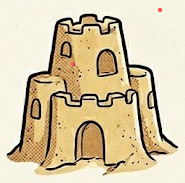
Escucha atentamente:
Roediger y McDermott (1995) prepararon 15 listas de palabras asociadas para comprobar la facilidad con que pueden crearse falsas memorias en individuos adultos.
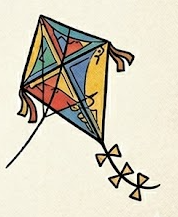
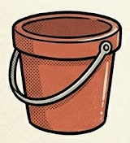
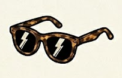
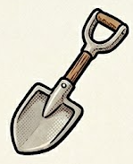
En EUA hubo un proyecto donde detectaron 300 casos de personas inocentes condenadas, su inocencia se demostró con pruebas de ADN.
Se determinó que ¾ partes habían sido condenados basados en los recuerdos imperfectos de alguien.
Cómo el contexto afecta la comprensión y el recuerdo
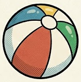
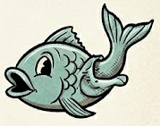
SIEMPRE QUE ME ACUERDO DE ALGO
SIEMPRE LO RECUERDO UN POCO DIFERENTE
Y SEA COMO SEA ESE RECUERDO
SIEMPRE ES VERDAD EN MI MENTE
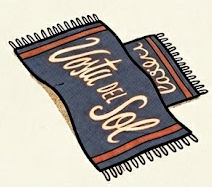